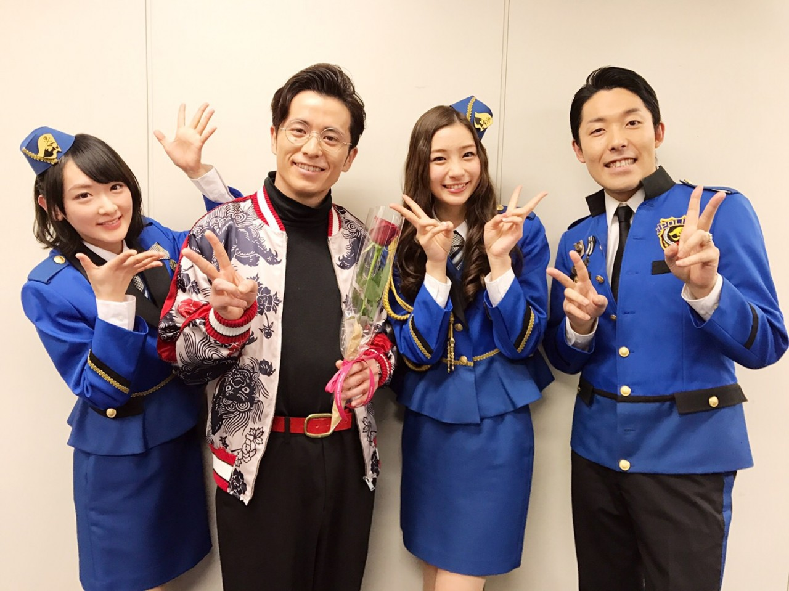

| 2017/04 05 Wed | 生駒里奈 いつの間にか始まってた新年度 |
４月ですね。
うはー
はやいはやい。
確実に去年よりも早く時間が過ぎているー。。
こりゃ気づいたら年末だわ笑
４月1日に大阪で開催されました、
インフルエンサーの初全国握手会
大阪での開催はすごくお久しぶりでしたが、
握手、途中から欠席してしまいましたすみません(´；ω；｀)
体調というものは頑張ってもコントロールはできません、、。
だから、皆さんに甘えてしまいました、、(´；ω；｀)
大丈夫って言葉に頼りました！！
でもお陰で頑張れております！！
本当にありがとうございます(´；ω；｀)！
ろっちーとのレーン！
ごめんねろっちーおやすみしちゃって(´；ω；｀)
そして、

ジャンポリスから、
藤森さんがいなくなっちゃった〜(´；ω；｀)(´；ω；｀)
充電期間って笑(´；ω；｀)
藤森さんは私にとっても、乃木坂にとってもすごく大好きなお兄ちゃんっ！！
いつもジャンポリのメイク部屋で梨花さんと藤森さんとメイクさんとするガールズトークが楽しみだたのにっっ！！
乃木坂の次に長くやっているのはジャンポリス
だから、私にとって
近くにこんなにも尊敬できて、面白い方がいるのはすごく自分にプラスの事ばかりで、
たまたま同じお仕事やっているだけの方ではないんです。
藤森さんには本当に本当ににお世話になりました！
ずっとお別れじゃないけど、
テレビ的にいつもいじったりしてるけど、
いなくなっちゃったのが寂しくて寂しくて(´；ω；｀)
しばらく藤森ロスです〜(´；ω；｀)
この前らじらーに出演した時に藤森さんだー(*´꒳`*)
って嬉しくなっちゃったのは誰にも言わないでね！
恥ずかしいっっ！！笑
きっとジャンポリファンの方も同じ気持ちの方いるはず！！
ですが、新年度からももっとジャンポリ盛り上げて、
奇跡を信じて藤森さんかえって来ますよーにって神様にお願いしようっと！！
あと、もっとジャンポリファミリーが仲良くなりますように(*´꒳`*)♡
週刊少年ジャンプも変わらず
友情、努力、勝利を全少年に与えてくれますように(*´꒳`*)☆☆
別れもあれば、出会いもある。
舞台 あさひなぐ
の薙刀の練習して来ました！！
いやはや全然わからない笑
今までやった事がない動きだからなかなか体に入らない〜！
ですが、野上えりちゃんを自分に憑依させながら段々と馴染ませていけたらなと思います！！
ではっ！！
へばなっ★彡